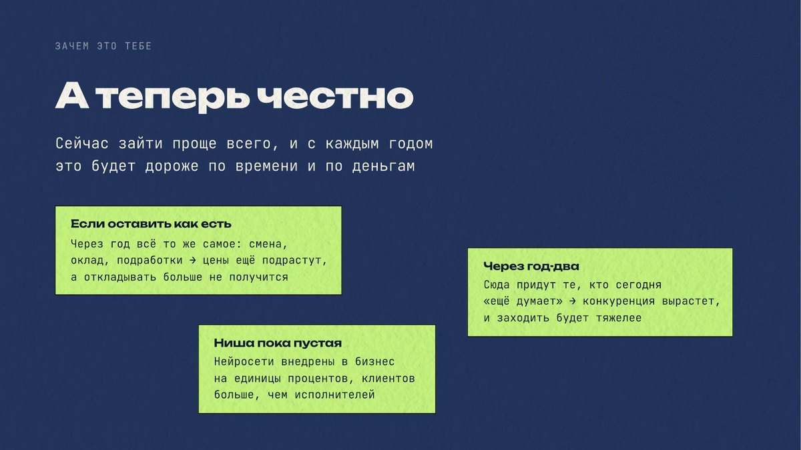
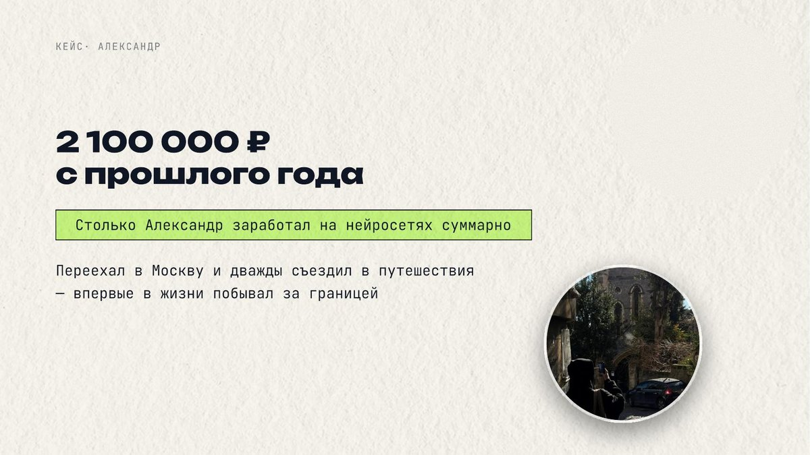

Что даёт урок: кто такой AI-инженер и за что ему платят, сколько стоят первые услуги и сколько их нужно в месяц, почему в эту нишу сейчас проще войти, чем в классический фриланс, и с какого конкретно навыка начинать.
AI-инженер собирает бизнесу готовые решения на нейросетях и продаёт их как услугу. Разница с обычным пользователем ChatGPT принципиальная: тот переписывается, этот проектирует, внедряет и обслуживает.
Классический фриланс это отдельный рынок со своим кровавым океаном, где люди бьются, просто демпингуя цены между собой, потому что сейчас нейросети могут делать всё то же самое за 120 рублей: сайты, лендинги, дизайн любой.

Пять уроков: шаги для старта, модели заработка, практика, поиск клиентов, продажи. Третий урок — ядро, там собираешь первую услугу руками на нашей платформе. В конце заполняешь паспорт профессии и получаешь персональные рекомендации, для дошедших до конца бесплатно.
Каждый из вас, кто даже просто умеет пользоваться интернетом, разберётся на этом уроке, как сделать свою первую услугу. Прямо по инструкции, по скринкасту, вместе со мной, по шагам.

Пять утверждений, загибаешь палец на каждое, которое про тебя. Знаешь, сколько заработаешь в следующем месяце. Можешь уехать на месяц-два, и доход не просядет. После работы остаётся время на семью и себя. Сам выбираешь, с кем работать. Денег хватает на жизнь и хотелки без подработок и кредитов.

Ижевск, обычная семья, отец 25 лет на заводе за одну и ту же зарплату. Забрал документы из колледжа, увидев, к чему это ведёт, и пошёл разнорабочим на стройку. Накопил 12 тысяч, поехал в Москву посмотреть, как живут другие.
Познакомился с ребятами из онлайн-школы, начал делать им ботов и автоматизации. Первый миллион, через полгода 120 тысяч в чеке при трёх-четырёх часах работы в день.
Я увидел эти деньги, я увидел, как можно мозгами зарабатывать, как можно делать это не потея на какого-то дядю. И для меня жизнь перевернулась.


Рекорд ученика: на седьмой месяц после обучения, заходя с нуля, человек заработал 870 тысяч за 31 день.

Ниша AI-инжиниринга пустая. Спрос у клиентов больше, потому что бизнес знает, что можно делать такие автоматизации, ему это нужно, но специалистов мало. Чеки дерут огромные, и люди готовы платить, потому что выбора нет.
Через год-два в нишу придут те, кто выжимал классический фриланс, и конкуренция вырастет. Сейчас входить дешевле и по деньгам, и по времени.

Базовый бот для салона красоты собирается за два-три часа и продаётся за 30–40 тысяч. Пять проектов в месяц дают 150 тысяч. Сверху идёт сопровождение: правки, акции, смена телефонов, это ещё 10–20 тысяч в месяц с каждого клиента.

Саша. Заходил из найма с зарплатой 40 тысяч. Специализировался на контент-заводах, продаёт их под ключ за 150 тысяч. За прошлый год 2,1 миллиона чистыми, рекордный месяц 220 тысяч. Не программист, технического опыта не было.

Елена, 46 лет. 22 года в найме, пять дней в неделю по будильнику.
Оказалось, что сборка бота это работа на пять минут. У неё получилось заработать первые 300 тысяч через четыре недели, и школа приняла работу с первого раза.
Осваиваешь один навык, для начала сборку чат-ботов. Упаковываешь его в услугу с понятной ценой и сроком. Определяешь, кому она нужна: офлайн-бизнес, онлайн-школы, магазины. Находишь первого клиента. Получаешь деньги.
Один навык закрывает сразу пять услуг: сборка ботов, правки в готовых, мини-воронки, ассистенты, рассылки по базе.
Мы сами ищем клиентов для своих первых учеников. Платим деньги в Яндекс Директ, в телеграм-посевы. Заявки передаём ученикам как готовых горячих клиентов.

Есть уже проверенный рабочий алгоритм, тебе остаётся его только повторить. Ни в одном из этих шагов нет ничего сложного, и для этого не нужно уметь программировать.
Три действия, которые займут двадцать минут
- Пройти тест на пальцах и записать свой результат: сколько пальцев загнулось.
- Выбрать из пяти направлений то, что ближе: боты, автоматизации, контент, сайты или аналитика.
- Открыть карту бизнесов и найти три компании без сайта, которым пригодился бы AI-администратор.